Thumbtack: Preset Jobs on Pro Landing Page (TTOD)
Verdict: not ready to launch. The new content (hero copy, bar, "Two ways to get hired" section) renders correctly on all four browser/device combos. Two of the three interactions are broken, though. On mobile, tapping the bar scrolls past the section title. On every browser, the section's "Sign up for free" never focuses the service field. The hero search fields are also styled wrong, and there's a horizontal scroll at 1025–1095px. The deployed Optimizely code is byte-identical to local va3.js/va3.css.
Check matrix
| # | Check | Chrome desktop | Chrome mobile | Safari desktop | Safari mobile |
|---|---|---|---|---|---|
| 1 | Variation fires on preview (forced) | Pass | Pass | Pass | Pass |
| 2 | H1 "Grow your business in [City]" (geo city kept) | Pass | Pass | Pass | Pass |
| 3 | Subhead "5M customers in the last 12 months on Thumbtack" | Pass | Pass | Pass | Pass |
| 4 | Hero layout: 2-col desktop / stacked mobile, new visual | Pass | Pass | Pass | Pass |
| 5 | Hero inputs match wireframe (white + grey border) | BUG-01 | BUG-01 | BUG-01 | BUG-01 |
| 6 | "See how it works" bar copy + position under hero | Pass | Pass | Pass | Pass |
| 7 | Bar click/tap/Enter scrolls to section top | Pass (0px) | BUG-02 (−215px) | Pass (0px) | BUG-02 (−214px) |
| 8 | Section placed after "How Thumbtack works", before "How Thumbtack is different" | Pass | Pass | Pass | Pass |
| 9 | Section copy vs wireframe | Q-01 | Q-01 | Q-01 | Q-01 |
| 10 | Cards side by side on desktop, stacked on mobile | Pass | Pass | Pass | Pass |
| 11 | Section "Sign up for free" scrolls back to hero | Pass | Pass | Pass | Pass |
| 12 | …and focuses the service input | BUG-03 | BUG-03 | BUG-03 | BUG-03 |
| 13 | Hero form still works (typeahead → /pro/occupation/…) | Pass | Pass | Pass | Pass |
| 14 | Copy persists after React re-render (12s); no duplicate injection | Pass | Pass | Pass | Pass |
| 15 | No JS errors from variation | Pass | Pass | Pass | Pass |
| 16 | No horizontal overflow 320–1920 | BUG-04: overflows at 1025–~1095px in both engines; all other widths clean | |||
| 17 | Deployed code = local va3.js / va3.css | Pass (extracted from live Optimizely bundle) | |||
Bugs
BUG-01 [High]: Hero search fields render half-styled; matches neither the wireframe nor the control
The wireframe shows both fields white with a light grey border. In the variation, the service field turns white, but a grey cap stays around the wrench icon (it looks clipped). The location field stays grey, and neither field has a border (computed border-width: 0). The control has two uniform grey pills. The CSS-variable override (--tp-background-neutral-default / --tp-border-neutral-default on searchFields) only reaches part of the native component. All browsers and widths.
Fix direction: style the input wrappers directly (background + 1px #dddee1 border on the pill container, transparent icon wrapper) instead of relying on design-token variables.

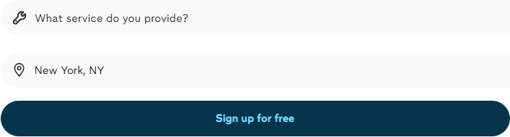

BUG-02 [Medium]: Mobile "See how it works" tap overshoots the section by ~215px
On iPhone 12 (Chrome and Safari engines), tap and keyboard Enter both land with the section top at −215px / −214px. The "Two ways to get hired" title and subtitle end up above the viewport, and the user lands mid-way through card 1. Desktop lands exactly at 0px.
Root cause: scrollToEl() computes the target once (2689px). As soon as scrolling starts, the page above shrinks by 215px (scrollHeight 9104 → 8889; a native element above collapses on scroll), so the section moves to 2474px but the scroll still ends at 2689px. This is the same landing-drift pattern seen in WIN282.
Fix direction: after the smooth scroll settles (~600–800ms), re-read getBoundingClientRect().top and correct. An alternative is to listen for scrollend or check repeatedly until the position is stable.
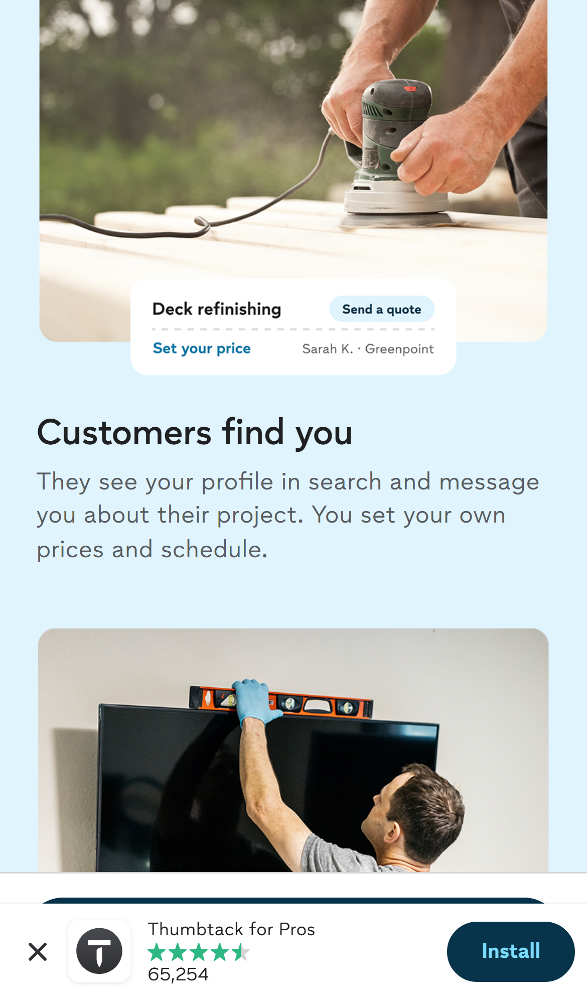
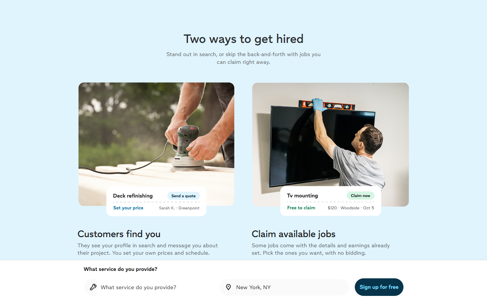
BUG-03 [Medium]: Section "Sign up for free" never focuses the service input
The scroll back to the hero works, but focus stays on BODY/the clicked button on all 4 combos. The code comment says the click should "focus the service input".
Root cause (traced): input is captured at click time. At the 500ms timeout, input.isConnected === false because React re-mounts the hero search field while the page scrolls back up (the native sticky search bar swaps in and out). focus() runs on a detached node and silently does nothing. A direct focus() on the current node works fine.
setTimeout(function () {
var input = document.querySelector(HERO_SECTION + ' input'); // re-query here
if (input) input.focus({ preventScroll: true });
}, 500);
BUG-04 [Medium]: Horizontal scroll at 1025–~1095px
At ≥1025px the hero becomes a grid of fixed 570px 502px columns plus 48px of padding (1120px minimum). At 1025px the page scrollWidth is 1096 and the hero image overflows. This hits iPad Pro landscape and small laptop windows. It's confirmed in Chromium and WebKit, and widths from 1100 up are clean. The cards row is also 5px too wide at 1025px (2×467 + 48 gap > 977).
Fix direction: grid-template-columns: minmax(0,570px) minmax(0,502px) with a gap, or move the desktop breakpoint to ~1120px.
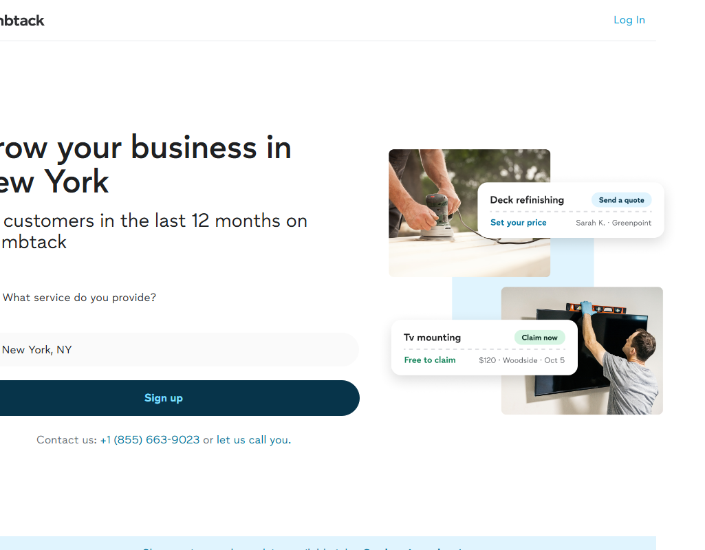
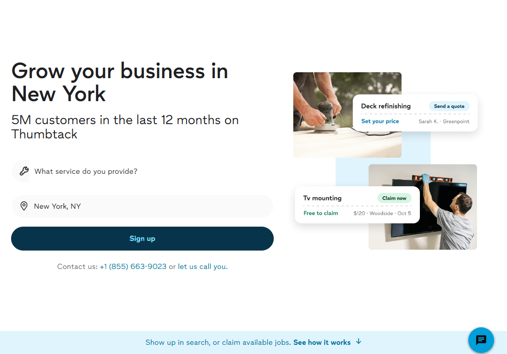
Questions for the client
Q-01: The wireframe has two different copy sets for the new section. Which one is final?
| "Desktop Web" frame (what's built, all devices) | "Mobile Web" + "Scroll prototype" frames | |
|---|---|---|
| Title | Two ways to get hired | More ways to grow your business |
| Subtitle | Stand out in search, or skip the back-and-forth with jobs you can claim right away. | Get leads, or claim ready-to-hire jobs with the preset details and earnings. |
| Card 1 | Customers find you: They see your profile in search… | Reply with your quote: Customers find you in search and reach out directly… |
| Card 2 | Claim available jobs: Some jobs come with the details and earnings already set… | Claim preset jobs: Claim jobs that are already booked. The price is set, and the earnings shown are exactly what you'll receive. |
| Card 2 image (mobile) | TV mounting | Interior painting (Mobile Web frame only) |
The build matches the Desktop Web frame exactly. If the Mobile Web copy is intended for mobile, the build is wrong on mobile.

Q-02: Overlapping live experiments on /pro
Three other experiments are active on /pro at the same time: 6405370246070272 ("Sign up" instead of "Sign up for free" CTA), 6329439777193984 (new testimonial section), and 5870164508409856. When a visitor is in both this test and the CTA test, the hero button reads "Sign up" but the new section's button reads "Sign up for free". The wireframe shows "Sign up for free" for both. Should these be in a mutual-exclusion group?
Low / notes
- L-01: On desktop, the native sticky bottom search bar covers the section's "Sign up for free" button whenever it sits in the bottom ~130px of the viewport. This is native behaviour; the button is clickable once the user scrolls a bit.
- L-02: The H1 rewrite needs " in <City>" in the control H1. If geo is unknown and the H1 has no "in …", the H1 keeps the control copy while the rest of the variation shows. The regex also drops a final period from a city like "Washington, D.C.". This is a risk; I couldn't simulate a no-geo state.
- L-03: The code pushes no custom events (bar click, section CTA click). Confirm which metrics the client wants tracked.
- L-04: On desktop, the bar has square corners; the wireframe looks slightly rounded. This is cosmetic and low confidence.
- Env: The unforced preview link buckets 50/50, so append
&optimizely_x=5442504495988736to force the variation. Forcing Original viaoptimizely_xdidn't take, so plain/prowas used as the control. Console noise that isn't ours: ~50×insertAdjacentHTMLnull errors (stale exp 5870164508409856), React #418, and Genesys chat iframe/GraphQL CORS on WebKit.
Screenshots: variation
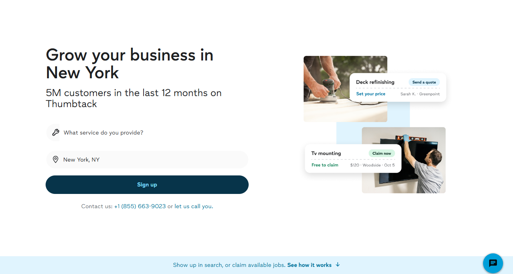
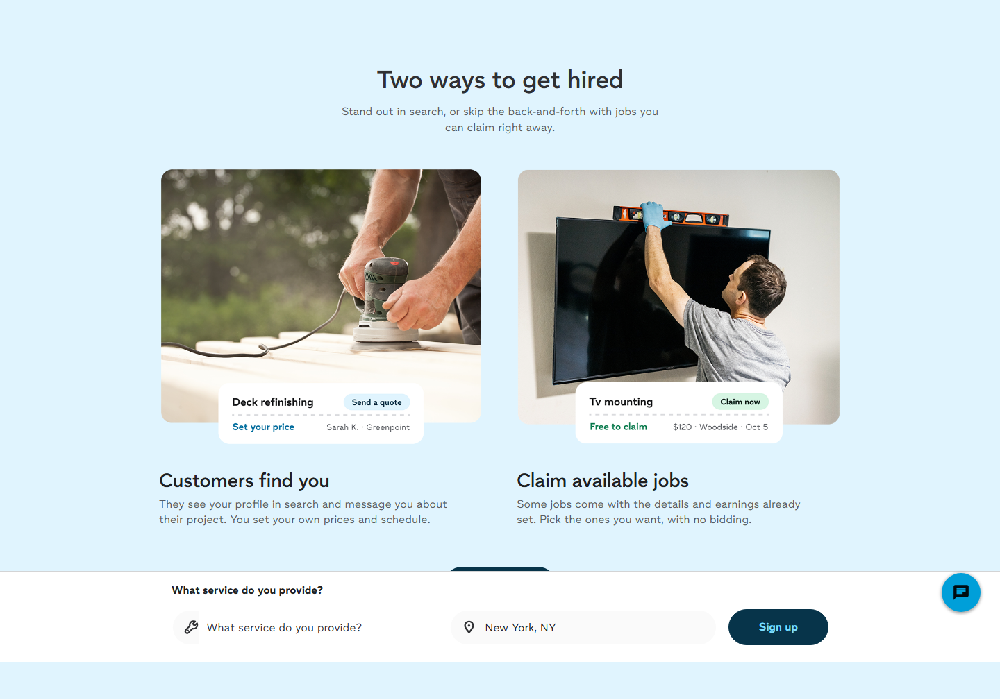
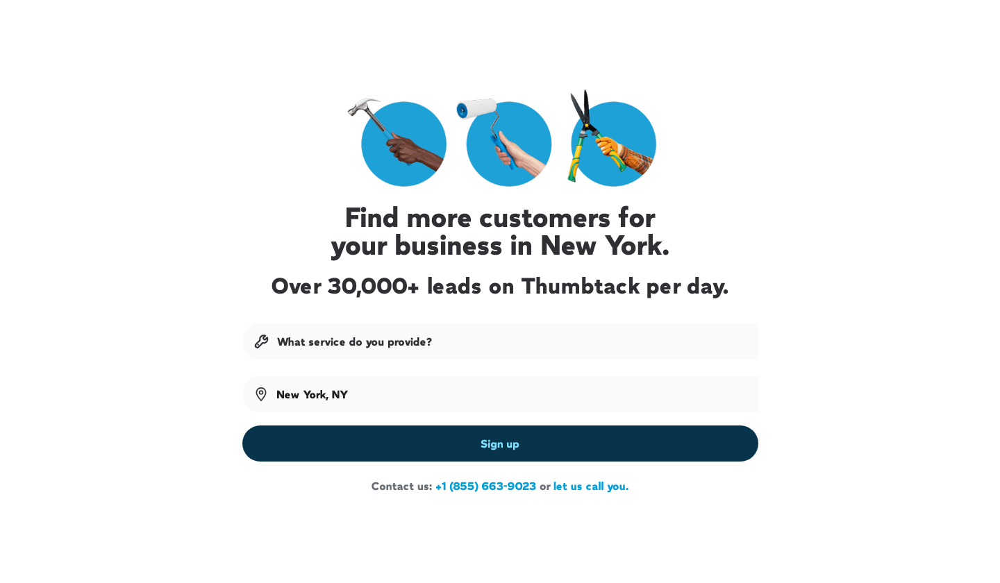
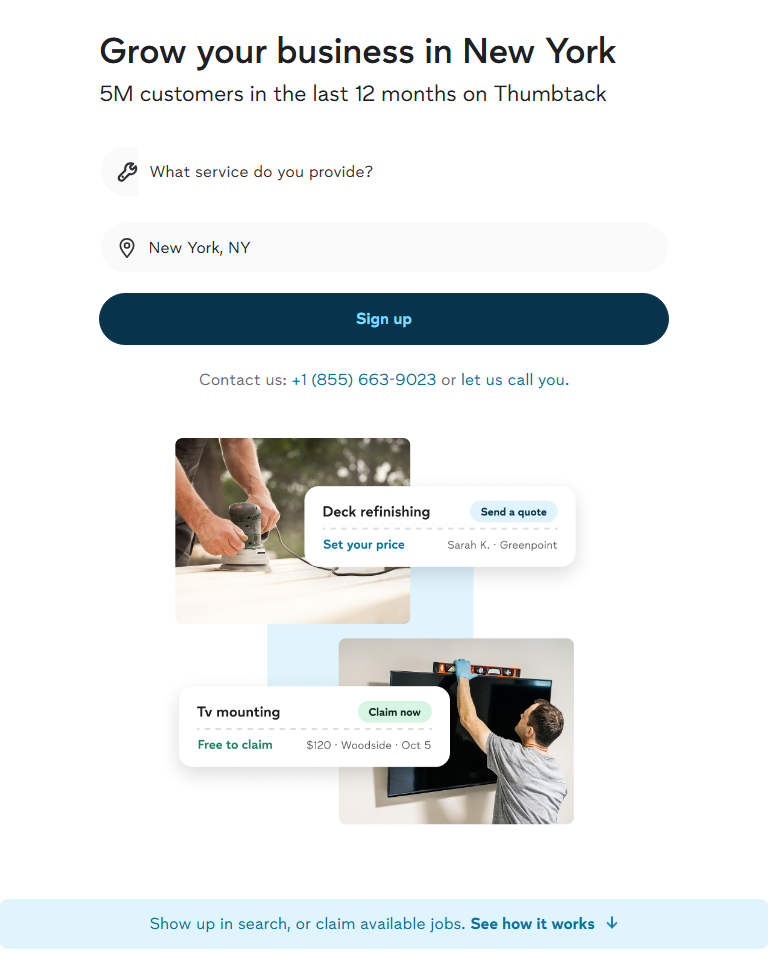
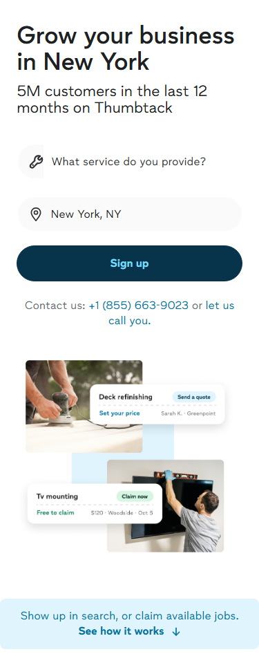
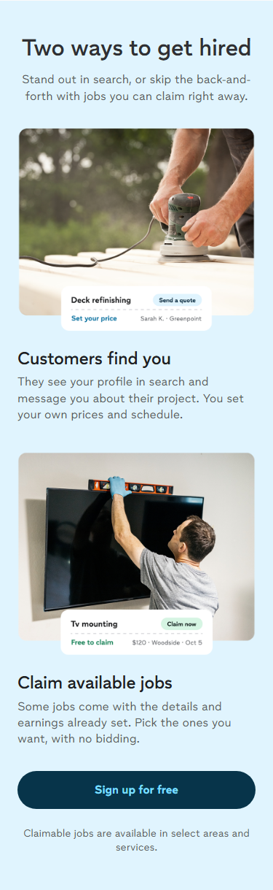
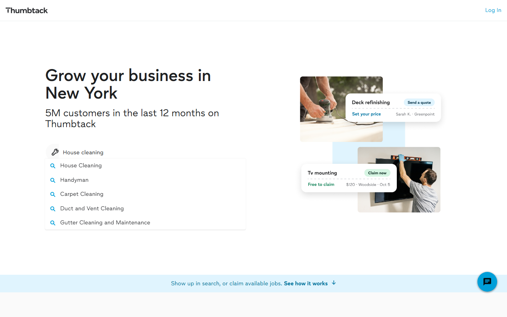